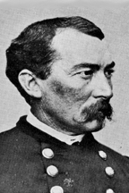

|

|

|
|
|
Union cavalry officer Philip Henry Sheridan ranked among the
top three generals in the Union Army along with Ulysses S.
Grant and William Tecumseh Sherman. Born in Albany, New York
to Irish immigrants, Sheridan's father was one of the
workers on the National Road. His parent resettled in Ohio,
where their son grew to his adult height of 5'5". In his
youth, Sheridan was captivated by the news of soldiers and
fighting in the Mexican War. His early fascination with all
things military prepared him for his life's work.
Sheridan graduated from West Point in 1853, ranking
thirty-fourth in a class of fifty-one. He served in the
west, including California, and the first year of the Civil
War found him on duty as a quartermaster captain. In the
Spring of 1862, Sheridan was appointed Colonel of the Second
Regiment Michigan Cavalry. Acquitting himself honorably in
the Corinth Campaign, Sheridan was described to General
Henry Halleck as "worth his weight in gold." Shortly, he was
appointed a brigadier-general.
On December 31, 1862, Sheridan displayed his leadership
abilities at the Battle of Stones River, where his fast
thinking and hard fighting helped to prevent the total
destruction of the Union forces. As a result of his actions
at Stones River, Sheridan was appointed a major-general,
taking command of the Third Division, Twentieth Corps, Army
of the Cumberland.
For the next year Sheridan and his division continued to
fight hard through the Middle Tennessee Campaign, June 24 -
July 5, 1863, and the Battle of Chickamauga, September 19
20, 1863, displaying unusual dedication. By November and
the Battle of Missionary Ridge, Sheridan was in command of
the Second Division, Fourth Corps, Army of the Cumberland,
in the military division of the Mississippi under the
command of General Ulysses S. Grant. The battle of
Missionary Ridge further polished Sheridan's growing
reputation when his division played a major role in
defeating Confederate troops. Importantly, the short, feisty
Sheridan with his characteristic handlebar moustache became
one of Grant's favorite generals.
After taking a short leave of absence due to physical
exhaustion, Sheridan returned to duty in March 1864
anticipating a resumption of the campaign in the west in
April. Instead he was ordered to move along with General
Grant to the eastern theatre. By the end of March, 1864,
Sheridan commanded the cavalry corps of the Army of the
Potomac.
Sheridan's troops consisted of three cavalry divisions
and twelve batteries of horse artillery. Included under his
command were such notable officers as Brigadier-General
George A. Custer. Sheridan immediately invigorated the
eastern the infantry corps by advocating a change to an
aggressive tactical force. Eagerly anticipating defeated the
Confederate forces under the famed Cavalry officer J.E.B.
Stuart, Sheridan was given the chance in May with the order
to "go out and do it."
Taking ten thousand men, Sheridan rode out on a raid to
cut Robert E. Lee's communications in the rear. Destroying
some twenty miles of railroad and a large quantity of
supplies, Sheridan reached Yellow Tavern on May 11th where
Stuart waited. Outnumbering the Confederates two to one and
with rapid-fire carbines, Sheridan's forces quickly defeated
Stuart's men took a large number of prisoners, and mortally
wounded Stuart. Stuart's loss to the Confederates was
comparable with the loss of Stonewall Jackson.
In July Grant assigned Sheridan to the command of the
Army of the Shenandoah Valley with orders to destroy the
Confederate forces there and the valley as a supply base for
the Confederates. Sheridan achieved lasting fame by rallying
his troops from certain defeat at the battle of Cedar Creek
and by early 1865, his job in the Shenandoah Valley
completed successfully. Sheridan then rejoined Grant on the
Petersburg-Richmond front.
At the beginning of March Sheridan's men engaged at the
battle of Five Forks, which forced Lee to abandon
Petersburg. Sheridan's cavalry and three infantry corps
pursued Lee vigorously, constantly probing and attacking the
retreating Confederates, wearing them down. At Appomattox
Courthouse with Sheridan on one side and the pursuing Grant
on the other, outnumbered five or six to one, Lee had no
alternative but to surrender.
As Grant's right arm of destruction in the eastern
theater of the War, Sheridan became associated with
devastation, particularly in the Shenandoah Valley campaign,
as he carried out Grant's and Sherman's total war. No matter
which position he held, Sheridan's concern was always for
the well being of his men and they in return repaid him with
loyalty and affection.
Sheridan's post war career was controversial, eventful
and distinguished. Sheridan was placed in charge of the
Fifth Military District (that encompassed Texas and
Louisiana) under the Congressional Reconstruction Acts. A
supporter of the Radical Republican version of
reconstruction, Sheridan proceeded to remove uncooperative
officials, including both state governors, and enforce fair
voting processes. In doing so, he created a firestorm of
protests and Andrew Johnson promptly removed him from the
position.
In the late 1860s, Sheridan was transferred to the
Department of the Missouri where he turned his energies to
defeating the Native American nations who refused to be
resettled from their traditional lands to reservations.
Headquartered in Chicago, Lieutenant General Sheridan was
appointed by President Grant to the commander of the
Division of the Missouri. Until 1870, He directed the U.S.
military actions against the nations such as the Cheyenne,
Apaches, and the Sioux. Sheridan's one notable failure, the
Battle of Little Big Horn, resulted in the death of his
protégé, George Custer, as well many U.S. soldiers.
Sheridan spent several years in Europe observing the
Franco-Prussian War before returning at Grant's request in
1874. The president placed his trusted subordinate in charge
of Louisiana, where terrorism and violence had left the
state in turmoil. Calling the White Leagues "banditti"
Sheridan crushed the resistance and brought some kind of
order to bear on the volatile situation. Leaving Louisiana
with charges that he overstepped his authority, Sheridan was
returned to his earlier responsibilities in the west. In
1883, he was appointed general in chief of the U.S. Army,
and was promoted to General of the Army: a four-star
general, a rank previously held only by Grant and Sherman.
Philip Sheridan died at the age of fifty-seven in 1888 in
Nonquitt, Massachusetts.
Source: Joan Waugh, ed., Facts on File Encyclopedia of American
History: Civil War and Reconstruction, 1856 to 1869 (New York: Facts on
File, 2003), 318-319.
|